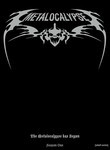
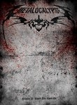
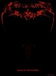

Metalocalypse
Stephen Klancher
...has seen 63
...has seen 1.1 hours

Timeline
Most Recent:
Metalocalypse: The Doomstar Requiem - A Klok Opera
...has seen 63
...has seen 1.1 hours
Timeline
Most Recent:
Metalocalypse: The Doomstar Requiem - A Klok Opera




Stephen Klancher: December 8, 2009 
Ofdensen's triumphant return. Also, "We've got to stick to what we do best: Death Metal and interior design."
Stephen Klancher: December 10, 2009
Toki secretly joined a tribute band of Dethklok as their Swisgar, which when they all joined, forced Swisgar to be Toki... excellent.
Stephen Klancher: April 14, 2010
Skwisgaar may actually be a god. There was an awesome scene where he was chased by wolves and found his guitar atop a tomb-like ice throne.
Stephen Klancher: May 4, 2011
Fuck it, I'm going to do both. I'm going to get drunk AND save the band!
Stephen Klancher: May 4, 2011
Toki is deathly afraid of bicentennial quarters. That is an impressively weird phobia.
Stephen Klancher: May 4, 2011
I love the episodes like this. I want them to actually go somewhere with all of this implication, but they are only doing like one or two storyline episodes per season.

Stephen Klancher: September 4, 2016